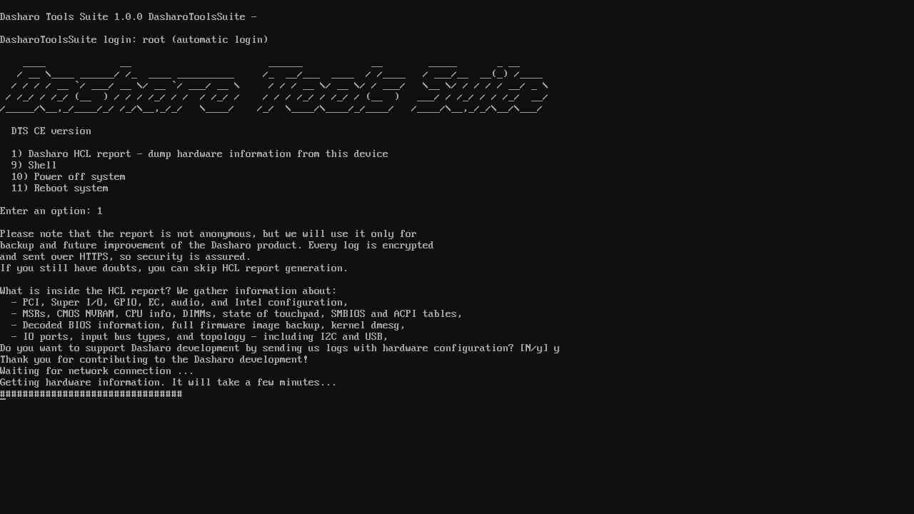

Documentation
Supported hardware
Dasharo Tools Suite was prepared to run on x86 platforms, but we can confirm that it boots on the following platforms:
- ASUS KGPE-D16,
- Dell OptiPlex 7010/9010,
- MSI PRO Z690-A DDR4 (test report),
- MSI PRO Z690-A DDR5 (test report),
- NovaCustom NV4x (test report),
- NovaCustom NS5x/7x (test report).
Running
The Dasharo Tools Suite can be started in various ways. Currently, there are two options:
- bootable over a network (iPXE),
- bootable USB stick image.
The first one should always be preferred if possible, as it is the easiest one to use.
Bootable over a network
This section describes how to boot DTS using iPXE.
Requirements
Below are the requirements that must be met to run DTS over a network on the platform:
- Dasharo device with DTS functionality integrated,
- wired network connection,
- Secure Boot disabled,
- disabled BIOS lock feature (if device is already flashed with Dasharo).
Launching DTS
To access Dasharo Tools Suite:
- attach a wired network cable to the device's Ethernet port,
- power on the device, holding down the Boot Menu entry key,
- in the Boot Menu, select the
iPXE Network Bootoption, - in the Network Boot menu, select the
Dasharo Tools Suiteoption, - the DTS menu will now appear.
Bootable USB stick
This section describes how to boot DTS using a USB stick.
Requirements
Below are the requirements that must be met to run DTS from a USB device on the platform:
- USB stick (at least 2GB),
- wired network connection,
- Secure Boot disabled,
- disabled BIOS lock feature (if device is already flashed with Dasharo),
- latest image from releases section.
Launching DTS
To access Dasharo Tools Suite:
- flash the downloaded image onto USB stick,
- you can use a cross-platform GUI installer - Etcher
- you can also use
ddto flash from the command line
gzip -cdk dts-base-image-v1.1.0.wic.gz | \
sudo dd of=/dev/sdX bs=16M status=progress conv=fdatasync
Note: this is an example done on the v1.1.0 image.
- insert the USB stick into a USB in your device,
- boot from the USB stick,
- the DTS menu will now appear.
Building
We choose Yocto Project to prepare Dasharo Tools Suite system. DTS image can be built using publicly available sources. Thanks to publishing the build cache on cache.dasharo.com the time needed to finish the process should be significantly decreased.
Prerequisites
The following must be met to build DTS:
- Linux PC (tested on
Ubuntu 20.04 LTS), - docker installed,
- kas-container 3.0.2 script downloaded and available in PATH,
wget -O ~/bin/kas-container https://raw.githubusercontent.com/siemens/kas/3.0.2/kas-container
chmod +x ~/bin/kas-container
meta-dtsrepository cloned.
mkdir yocto && cd yocto
git clone https://github.com/Dasharo/meta-dts.git
Build
From yocto directory, run:
SHELL=/bin/bash kas-container build meta-dts/kas.yml
Image build takes time, so be patient, and the build's finished, you should see something similar to (tasks number may differ):
Initialising tasks: 100% |###########################################################################################| Time: 0:00:01
Sstate summary: Wanted 2 Found 0 Missed 2 Current 931 (0% match, 99% complete)
NOTE: Executing Tasks
NOTE: Tasks Summary: Attempted 2532 tasks of which 2524 didn't need to be rerun and all succeeded.
Using the cache is enabled in kas/cache.yml file and can be disabled by
removing content of that file.
cat kas/cache.yml
output:
header:
version: 11
local_conf_header:
yocto-cache: |
SSTATE_MIRRORS ?= "file://.* http://${LOCAL_PREMIRROR_SERVER}/${PROJECT_NAME}/sstate-cache/PATH"
SOURCE_MIRROR_URL ?= "http://${LOCAL_PREMIRROR_SERVER}/${PROJECT_NAME}/downloads"
INHERIT += "own-mirrors"
LOCAL_PREMIRROR_SERVER ?= "cache.dasharo.com"
PROJECT_NAME ?= "yocto/dts"
Build image with UEFI Secure Boot support
From yocto directory run:
SHELL=/bin/bash kas-container build meta-dts/kas-uefi-sb.yml
Image build takes time, so be patient and after build's finish you should see something similar to (the exact tasks numbers may differ):
Initialising tasks: 100% |###########################################################################################| Time: 0:00:04
Checking sstate mirror object availability: 100% |###################################################################| Time: 0:00:03
Sstate summary: Wanted 892 Local 672 Mirrors 212 Missed 8 Current 1560 (99% match, 99% complete)
NOTE: Executing Tasks
NOTE: Tasks Summary: Attempted 5860 tasks of which 5841 didn't need to be rerun and all succeeded.
Image created with kas-uefi-sb.yml configuration file enable integration of
UEFI Secure Boot into DTS using
meta-secure-core. Building the
image allow to prepare a PoC version with uses sample
keys
which by no mean should used in production. For user keys the script
[create-user-key-store.sh](https://github.com/jiazhang0/meta-secure-core/blob/master/meta-signing-key/scripts/create-user-key-store.sh
can be used but it was not tested yet. Quick start with instructions on how to
use image are described in
meta-efi-secure-boot.
Flash
- Find out your device name.
fdisk -l
output:
(...)
Device Boot Start End Sectors Size Id Type
/dev/sdx1 * 8192 131433 123242 60,2M c W95 FAT32 (LBA)
/dev/sdx2 139264 186667 47404 23,2M 83 Linux
In this case the device name is /dev/sdx, but be aware, in the next steps,
replace /dev/sdx with the right device name on your platform, or else you can
damage your system!
- From where you ran image build type.
sudo umount /dev/sdx*
cd build/tmp/deploy/images/genericx86-64
Here the file dts-base-image-genericx86-64.wic.gz should be available, which
is the image of DTS. To flash image, you can use the same command shown in
running section. Just change the file name.
- Boot the platform.
Disabling Secure Boot
Any procedure affecting the firmware flashing should be preceded by controlling the Secure Boot status and if it is turned on, turning it off. The enabled Secure Boot will not only prevent you from operating on the firmware, but you will also not be able to launch DTS.
To check the Secure Boot state:
- Turn off the station on which you want to test the Dasharo firmware.
- Turn the station on and go to the next step immediately.
- Hold the
BIOS SETUP KEYto enter theBIOS MENU. - Localize and enter the
Secure Bootmenu using the arrow keys and Enter. - Verify that the
Secure Boot Statusfield saysDisabled- if not, deselect theEnforce Secure Bootoption using the arrow keys and Enter. - Change the setting of Secure Boot to
Disabledand press Enter. - Press the
F10key to open the dialog box. - Press
Enterto confirm changes and exit from the menu.
After completing the steps described above, Secure Boot should be disabled. You could confirm that by repeating steps 3 - 5.
Features
This section describes the functionality of the Dasharo Tools Suite. These are:
- Dasharo zero-touch initial deployment,
- HCL Report,
- Firmware update,
- EC transition,
- EC update,
- additional features,
Dasharo zero-touch initial deployment
DTS can be used to flash Dasharo firmware on your hardware. To achieve this,
boot DTS, choose option number 2. After creating
report with
firmware dump as backup, type p to confirm the installation of Dasharo
firmware.
Next you will be asked two questions to confirm flashing. The first will be
displayed with the detected information about the device you are using DTS on.
The second will also provide the hash of Dasharo components which will then be
used for flashing. You can compare them with the values listed in the supported
hardware section on docs.dasharo.com. Both these questions can be accepted by
typing Y.
Procedure execution ends automatically on the reboot of the platform (unless it requires otherwise). After restarting the device, you can enjoy the basic version of Dasharo, which we provide for given hardware.
This feature is supported on the following platforms:
- ASUS KGPE-D16,
- Dell OptiPlex 7010/9010,
- MSI PRO Z690-A DDR4,
- MSI PRO Z690-A DDR5,
- NovaCustom NV4x,
- NovaCustom NS5x/7x.
HCL Report
DTS allows the generation of a package with logs containing hardware information. To create one, choose option number 1 and check out the disclaimer. If you would like to send the report to our servers, please remember about connecting the ethernet cable. More information can be found in glossary.

HCL Report correctness
Please note DTS HCL Report assumes that your chipset is already supported by flashrom. There are also other false negative errors and unknowns, which we trying to fix to improve user experience.
Always check results file to confirm the quality of your HCL report. Sample
content of such file may look as follows:
[OK] PCI configuration space and topology
[UNKNOWN] USB devices and topology
[OK] Super I/O configuration
[UNKNOWN] EC configuration
[ERROR] MSRs
[OK] SMBIOS tables
[OK] BIOS information
[OK] CMOS NVRAM
[UNKNOWN] Intel configuration registers
[OK] GPIO configuration C header files
[OK] kernel dmesg
[OK] ACPI tables
[UNKNOWN] Audio devices configuration
[OK] CPU info
[OK] I/O ports
[OK] Input bus types
[OK] Firmware image
[OK] I2C bus
[UNKNOWN] ACPI tables
[OK] Touchpad information
[OK] DIMMs information
[ERROR] CBMEM table information
[ERROR] TPM information
[ERROR] AMT information
[OK] ME information
Results of getting data:
Legend:
[OK] Data get successfully
[UNKNOWN] Result is unknown
[ERROR] Error during getting data
Please report all errors experienced while performing a dump to dasharo-issues repository.
BIOS backup
One of the key components of HCL Report is your BIOS backup. To prepare BIOS backup of your platform, simply run HCL Report and decide if you would like to contribute information about your hardware configuration.
Please consider the following options depending on your situation:
- YES - If you decide to contribute, you can always get back to us and ask about BIOS backup, which we will provide after simple verification that you are the owner of the hardware.
- NO (default) - If you decide to not contribute, your situation depends on
the boot method you used to execute DTS:
- Network Boot - please note that Dasharo booted over iPXE assumes no
storage available, so the report, and your BIOS backup are stored in
temporary memory and will not be available after reboot. Please make sure
to move HCL Report to not volatile storage. This can be done using option
9) Shell, - USB Boot - HCL Report and BIOS backup are saved to USB storage root directory.
- Network Boot - please note that Dasharo booted over iPXE assumes no
storage available, so the report, and your BIOS backup are stored in
temporary memory and will not be available after reboot. Please make sure
to move HCL Report to not volatile storage. This can be done using option
Firmware update
DTS can be used to update Dasharo firmware. To achieve this, boot it on platform
with flashed Dasharo and choose option number 5.
Next you will be asked two questions to confirm flashing. The first will be
displayed with the detected information about the device you are using DTS on.
The second will also provide the hash of Dasharo components which will then be
used for flashing. You can compare them with the values listed in the supported
hardware section on docs.dasharo.com. Both these questions can be accepted by
typing Y.
If you see the following warning during the process, you do not need to worry about it:
Warning: Setting BIOS Control at 0xdc from 0x8b to 0x89 failed.
New value is 0x8b.
Procedure execution ends automatically on the reboot of the platform (unless it requires otherwise). After restarting the device, you can enjoy the updated version of Dasharo, which we provide for given hardware.
Below we provide an example of updating Dasharo firmware from version v1.0.0 to v1.1.1 on MSI PRO Z690-A DDR4.
DTS version v1.2.0
1) Dasharo HCL report - dump hardware information from this device
3) Restore firmware from Dasharo HCL report
4) Load SE keys
5) Update Dasharo firmware
9) Shell
10) Power off system
11) Reboot system
Enter an option: 5
Gathering flash chip and chipset information...
Flash information: vendor="Programmer" name="Opaque flash chip"
Flash size: 32M
Checking for the latest Dasharo update available...
Current Dasharo version: 1.0.0
Latest available Dasharo version: 1.1.1
Please verify detected hardware!
Board vendor: Micro-Star International Co., Ltd.
System model: MS-7D25
Board model: PRO Z690-A WIFI DDR4(MS-7D25)
Does it match your actual specification? (Y|n)y
Following firmware will be used to install Dasharo
Dasharo BIOS firmware:
- link: https://3mdeb.com/(...)/msi_ms7d25_v1.1.1_ddr4.rom
- hash: 3b438422338cf4c13abdb25823a9b2a2ad6e82fabbe0d9ed41a16a6eae1f15ff
You can learn more about this release on: https://docs.dasharo.com/
Do you want to update Dasharo firmware on your hardware? (Y|n) y
Downloading Dasharo firmware update...
########################################################################### 100.0%
Checking sha256sum...
/tmp/biosupdate.rom: OK
Updating Dasharo firmware...
This will take around 3 minutes. Please be patient and do not reset your
computer, or touch keyboard!
Successfully updated Dasharo firmware
Syncing disks... Done.
The computer will reboot automatically in 5 seconds
Rebooting in 5s:
5...
4...
3...
2...
1...
Rebooting
Local firmware update
To flash a local BIOS image (e.g. mounted from a USB stick), you can drop to the
shell (option 9) and use the flashrom binary provided inside DTS directly.
DANGER: Failure to use flashrom correctly may result in an unbootable
device. For example, never flash an image that does not contain an Intel
Firmware Descriptor (IFD) region and/or Management Engine (ME) region to the
whole chip.
You can use flashrom -p internal without additional parameters to double check
if flashrom detects your chipset. This will not write anything.
The following flashrom command will only rewrite the BIOS region:
sudo flashrom -p internal --ifd -i bios -w [path/to/your/coreboot.rom]
If flashrom outputs the following, you do not need to worry about it:
Enabling flash write... Warning: Setting BIOS Control at 0xdc from 0x8b to 0x89 failed.
New value is 0x8b.
SPI Configuration is locked down
EC transition
DTS allows performing full Embedded Controller firmware transition from the proprietary vendor EC firmware to the Dasharo EC firmware. Currently, this functionality is supported on the NovaCustom NS5x/NS7x) and NovaCustom NV4x only.
Starting from DTS v1.2.0 to perform EC transition please run firmware update on the platform with proprietary vendor EC firmware.
EC update
DTS allows to update open-source Embedded Controller firmware to the newer version. This is how we can achieve that.
- Retrieve information about your current EC.
system76_ectool info
The output of the above-described command should contain information about the version of flashed firmware:
board: clevo/ns50mu
version: 2022-08-16_c12ff1a
- Download the newest version of Embedded Controller firmware.
- Plug in power supply, without it, flashing EC is not possible as losing power may cause in damaged firmware.
- Flash Embedded Controller firmware internally.
system76_ectool flash ec_file.rom
The output of the above-described command should look as follows:
file board: Ok("clevo/ns50mu")
file version: Ok("2022-08-16_c12ff1a")
ec board: Ok("clevo/ns50mu")
ec version: Ok("2022-08-31_cbff21b")
Waiting 5 seconds for all keys to be released
Sync
SPI Read 128K
Saving ROM to backup.rom
SPI Write 128K
SPI Read 128K
Successfully programmed SPI ROM
Result: Ok(())
Sync
System will shut off in 5 seconds
Sync
Note: this is example output, versions may differ
- Computer will shut down automatically.
- Power on your computer. Booting process may take a while.
- After boot, choose option number 9 to drop to Shell.
- Retrieve information about your updated EC.
system76_ectool info
The output of the above-described command should contain information about the version of flashed firmware:
board: clevo/ns50mu
version: 2022-08-31_cbff21b
Additional features
The section below presents a list of functionalities added to DTS, which were developed at the community's request and which do not necessarily relate strictly to Dasharo.
Run commands from iPXE shell
Note: this functionality might not work, please see GitHub issue.
It is possible to execute the bash script after Linux startup by passing it from
the iPXE shell. Every script placed in /sbin/ipxe-commands will be executed
automatically after startup.
Here is a simple instruction on how to use that feature.
- Run the HTTP server in the directory which contains the DTS base image. If you
build it by yourself, then it should be the
meta-dtssubdirectory:build/tmp/deploy/images/genericx86-64.
The easiest way to start an HTTP server is using http.server python module.
$ python3 -m http.server 9000
- Create a
dts.ipxebootchain file in a directory where you have an HTTP server. That file should have similar content (you need to enter the IP of your host machine in a local network).
#!ipxe
#
kernel http://<YOUR_IP>:9000/bzImage root=/dev/nfs initrd=http://<YOUR_IP>:9000/dts-base-image-genericx86-64.cpio.gz
initrd http://<YOUR_IP>:9000/dts-base-image-genericx86-64.cpio.gz
module http://<YOUR_IP>:9000/custom-script /sbin/ipxe-commands mode=755
boot
-
Copy your
custom-scriptscript in this same directory. -
Enter the iPXE shell on your device and load
dts.ipxebootchain file.
iPXE> dhcp
Configuring (net0 00:0d:b9:4b:49:60)...... ok
iPXE> route
net0: 192.168.4.126/255.255.255.0 gw 192.168.4.1
iPXE> chain http://192.168.4.98:9000/dts.ipxe
http://192.168.4.98:9000/dts.ipxe... ok
http://192.168.4.98:9000/bzImage... ok
http://192.168.4.98:9000/dts-base-image-genericx86-64.cpio.gz... ok
http://192.168.4.98:9000/custom-script... ok
Now your custom-script script should be copied to DTS rootfs as
ipxe-commands and will be executed after boot.
Run DTS using VentoyOS
Starting from version v1.1.1, we provide also an ISO formatted image. Thanks to that, it can be used with VentoyOS[1]. As for now the following limitations are known.
- VentoyOS needs to be started in UEFI mode.
- Nothing can be saved on root file system, as VentoyOS boots systems in read-only mode.
Please let us know if you started DTS using VentoyOS and have additional information for us. You can share them on Dasharo Matrix Workspace.